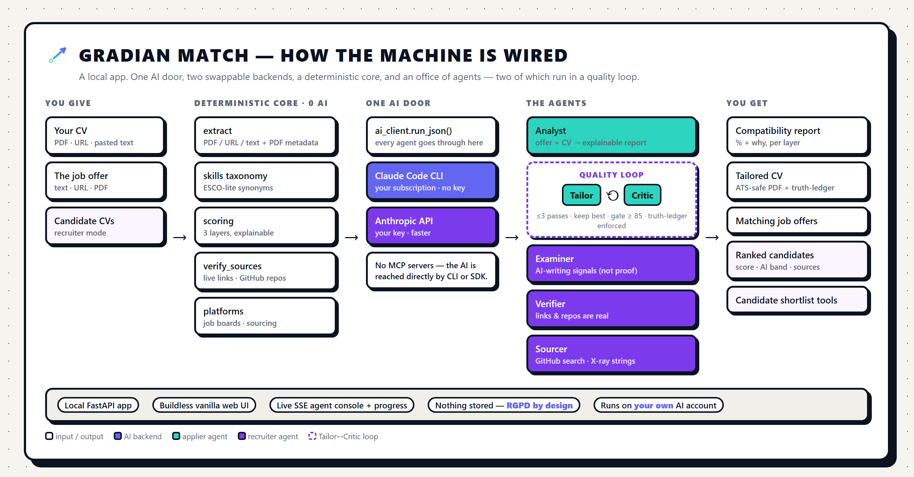

A local, agentic tool that reads a CV and a job offer and tells you — explainably — how well they fit, then rewrites the CV to fit better. It works from both sides of the table: the Applier (job-seeker) and the Recruiter (hiring).
Everything runs on your own machine and on your own AI account. Nothing is stored; nothing leaves your computer except the calls you make to your AI and to the job boards you switch on. It is not a website you log into — it's an app you run.

| Agent | Side | What it does |
|---|---|---|
| Analyst | both | Reads the offer + CV, extracts the requirements, and produces the explainable report. |
| Tailor | applier | Rewrites the CV at the slider's aggressiveness. Anything it adds beyond your real CV is written to the truth-ledger. |
| Critic | applier | Scores each rewrite and enforces the gate: any un-ledgered claim fails it. |
| Examiner | recruiter | Judges AI-writing likelihood (Low / Medium / High) with evidence — a signal, not a verdict. |
| Verifier | recruiter | Confirms links and GitHub repositories exist (owner, stars, last commit). |
| Sourcer | recruiter | Turns a role into a GitHub search and an X-ray string for consent-based sourcing. |
The Applier's rewrite is not one shot. The Tailor writes a version; the Critic grades it against a rubric — keyword coverage, readability, ATS-parseability, and truthfulness as a hard gate. If it doesn't pass (target ≥ 85), the Critic's feedback goes back to the Tailor and it tries again — up to three passes, keeping the best. The same philosophy as the rest of Gradian's factory: nothing ships below the bar.
Truth-locked. The slider can be aggressive, but every claim it adds beyond your source CV lands in the truth-ledger — "⚠ verify before sending" — so you never walk into an interview not knowing what your own CV says.
Install Claude Code and sign in. Gradian Match calls it under the hood on your subscription. Nothing to buy, nothing to paste.
Put ANTHROPIC_API_KEY in .env. This talks to the API directly — lighter and faster per call than the CLI, ideal for the multi-call rewrite loop.
Either way it is local and self-hosted. There is deliberately no hosted version: CVs are personal data, and keeping them on your machine is the whole point. The tool uses no MCP servers — it reaches the AI directly through the CLI or the SDK.
Everything is in-memory per session; temporary files are deleted; the server binds to 127.0.0.1 only and rejects cross-origin requests. In recruiter mode you process third parties' data — the legal basis is yours, and the tool holds nothing. The AI-signal flags are explicitly signals, not proof: don't auto-reject anyone on them.